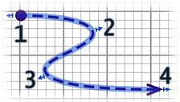
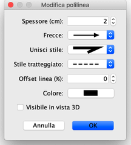

| Modificare polilinee e curve | |||
Puoi modificare la posizione delle polilinee con il mouse, dopo averle selezionate nel piano. Quando una polilinea è selezionata nel piano, puoi spostare uno qualsiasi dei suoi punti, con gli indicatori di punto che appaiono in ogni punto della polilinea selezionata.  Quando il puntatore del mouse si trova su uno di questi indicatori, cambia per indicare che puoi trascinare e rilasciare quel punto per spostarlo.  Nel riquadro delle polilinee, puoi modificare lo spessore della polilinea selezionata, le frecce disegnate alle sue estremità, lo stile di linee unite, il suo stile di trattino, l'offset per spostare il motivo del trattino all'inizio e il suo colore. L'ultima scelta dell'elenco a discesa Stile di partecipazione consente per disegnare una curva invece di linee. |
|